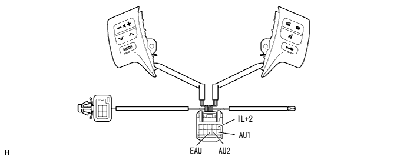

Steering Pad Switch Assembly (3-spoke Steering Wheel) Inspection |
| 1. Inspect Steering Pad Switch Assembly |
Resistance Inspection
Using SST (Toyota electrical tester), inspect the resistance between each terminal of the steering pad switch assembly connector when each switch is operated.

| Tester Connection (Terminal Symbol) | Condition | Standard |
|---|---|---|
| 10(AU1) - 8(EAU) | No switch pushed | Approximately 100K Ω |
| SEEK+ switch pushed | 2.5 Ω or less | |
| SEEK- switch pressed | Approximately 0.3K Ω | |
| VOL+ switch pushed | Approximately 1K Ω | |
| VOL- switch pushed | Approximately 3.1K Ω | |
| 9(AU2) - 8(EAU) | No switch pushed | Approximately 100K Ω |
| MODE switch pushed | 2.5 Ω or less | |
| On-hook switch pushed | Approximately 0.3K Ω | |
| Off-hook switch pushed | Approximately 1K Ω | |
| VOICE switch pushed | Approximately 3.1K Ω |
Illumination Inspection (Night Illumination)
Check that the illumination in the steering pad switch assembly comes on when battery positive is connected to terminal 5 (IL+2) and battery negative to terminal 8 (EAU).